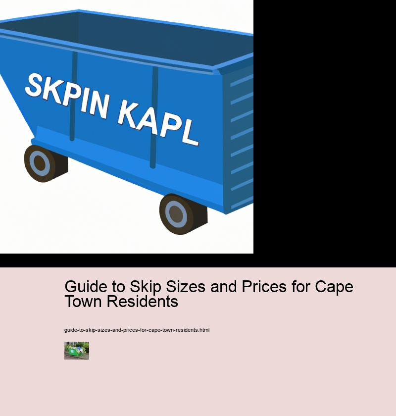

Guide to Skip Sizes and Prices for Cape Town Residents
Rear load containers
Different types of skips available in Cape Town
Skips come in a variety of sizes and prices, depending on the type of waste you need to dispose of. In Cape Town, there are several different types of skips available for hire.
For general waste, there is the mini skip which can hold up to 3 cubic metres of rubbish; this is ideal for small home or garden projects. Additionally, midi skips are available for slightly larger jobs and can accommodate up to 6 cubic metres of waste. For more significant clean-up tasks such as renovations or building sites, builders' skips are a good choice; they can store up to 10 cubic metres of debris.
Furthermore, if hazardous materials such as asbestos need disposing of safely, specialised hazardous waste skips are available; these range from 8-30 cubic metres in size and come with a lining suitable for containing harmful substances. In addition to this, hard core skips provide an easy way to transport large amounts of rubble and soil; these can hold between 8-16 cubic metres worth of material.
Lastly, if you require an even bigger capacity skip for large commercial operations or landscaping projects, roll on-off containers have a capacity ranging from 20-40 cubic metres – perfect for those larger scale jobs!
Overall, no matter what kind of project you’re undertaking in Cape Town – big or small – there will be a variety of skip sizes and prices available that meet your needs. With so many options at your disposal it pays to do some research first so that you choose exactly the right one for your job!
Key factors that influence skip prices
Skip prices are determined by a variety of factors. Location, size and type of skip all play a part in the cost. In Cape Town, there are several key factors that can affect the price of hiring a skip.
Guide to Skip Sizes and Prices for Cape Town Residents - Rear load containers
- Rear load containers
- Concrete recycling
- Roll off trucks
Moreover, the size of your skip also has a significant effect on price. Larger skips tend to cost more than smaller ones due to increased transportation costs and added labour requirements for loading and unloading them. Furthermore, if you need multiple skips or have specific requirements such as hazardous waste disposal then this may require additional fees or services which add to the overall cost.
In addition, the type of skip you choose can also influence price significantly. Skip bins come in a range of shapes and sizes including open-top bins, enclosed containers, front-end loaders and roll-off containers - each with their own unique cost structure. Lastly, skip hire companies may offer discounts or special deals during slow periods so it's worth checking to see what offers are available before making your decision.
Overall, understanding these key factors that influence skip prices in Cape Town can help you find an affordable solution that meets your needs. With careful consideration and some research into local providers you should be able to secure a good deal on your next rental project!
Overview of the different sizes and their associated costs
Skip sizes and prices can vary greatly depending on where you live. In Cape Town, there are a variety of skip sizes available and their associated costs. Let's take a look at the different options.
Smaller skips are perfect for smaller jobs such as clearing out a garden or disposing of small amounts of trash.
Guide to Skip Sizes and Prices for Cape Town Residents - Roll off trucks
- Rear load containers
- Concrete recycling
- Roll off trucks
Conversely, larger skips are more suitable for larger projects like renovations or spring cleaning. They include 7 cubic meters, 8 cubic meters and 10 cubic meters with prices starting from R700 up to R950.
Finally, extra-large skips are ideal for industrial waste disposal or construction sites. They range from 12 cubic meters to 18 cubic meter size skips costing between R1100 to R1400 per skip respectively.
In conclusion, it is important to choose the right size skip for your project in order to get the best value for your money while ensuring all your debris is safely collected and disposed of appropriately.
Tips for selecting the right size skip for your waste removal needs
Choosing the right skip size for your waste removal needs can be tricky. It's important to consider several factors and determine which size is best for you. Firstly, consider the amount of waste you need to remove. If it's a small amount, then a mini or midi skip should suffice; however, if you have more than one large item, such as furniture or appliances, then a larger size might be necessary. Secondly, think about the weight of the items you are disposing of - heavier items may require a bigger skip with higher capacity. Lastly, budget constraints should also be taken into account when deciding on the right size skip for you.
Now that we've discussed some of the factors to bear in mind when selecting your skip size, let's delve into what sizes are available in Cape Town and their associated prices. Mini skips are ideal for small domestic projects and start from R500 per week - perfect for those on a tighter budget! Midi skips come in at around R600-R800 per week and are suitable for larger projects or multiple trips to the tip. If you're undertaking an extensive renovation or cleaning out an entire property then opt for a large builder’s skip which typically costs between R1000-R1500 per week. Moreover, additional charges may apply depending on where exactly delivery is required - so make sure to keep this in mind too!
Overall, there are various factors to weigh up when determining which size skip is right for your needs. Consider how much waste needs disposing of carefully as well as any budgetary constraints before making your decision – this will help ensure that you get maximum value from your purchase!
Additional considerations to keep in mind when renting a skip
Renting a skip is an easy and convenient way to dispose of large quantities of waste. However, there are some additional considerations to keep in mind when renting a skip. Firstly, you need to make sure that the size of your skip is appropriate for the amount of rubbish you need to dispose of. Underestimating the size could lead to overloading and can be dangerous. Secondly, it's important to check with your local council about any restrictions on placing skips in certain areas - this will help avoid any fines or penalties! Lastly, if you're hiring a skip for a long period, remember that some providers may charge extra for extended hire periods.
On top of these considerations, it's also worth considering how much you'll be charged for the skip itself. Different sizes come with different prices so make sure that you get the best deal possible by comparing prices from different suppliers. Furthermore, there may be additional charges such as delivery fees which should also be taken into account when calculating costs.
In conclusion, it's important not only to consider the cost but also other factors such as size and access restrictions when renting a skip - this will ensure that everything goes smoothly without any surprises or unexpected expenses!
FAQs about skip hire
Skip hire can be a daunting prospect for Cape Town residents, with so many sizes and prices to choose from. But don't worry – this guide aims to answer all your FAQs about skip hire!
Guide to Skip Sizes and Prices for Cape Town Residents - Roll off trucks
- Rear load containers
- Concrete recycling
- Roll off trucks
Firstly, it's important to select the right size of skip for your needs. Generally speaking, 4-yard skips are suitable for small projects such as home decluttering or garden clearouts. On the other hand, 8-yard skips are better suited for bigger jobs like kitchen or bathroom renovations. Additionally, if you're planning on disposing of bulky items like furniture or white goods then you may need a 12-yard container.
Moreover, it's also essential to consider your budget when choosing a skip hire service. Prices will vary depending on the size and duration of rental, however many companies offer discounts for longer hires. Transiently, some companies may also add extras such as delivery charges or environmental levies so make sure you read through any terms and conditions before committing to a purchase.
Finally, there are plenty of helpful resources available online which can assist with finding the best skip hire deal in Cape Town. From price comparison sites to customer reviews – doing your research wisely could save you time and money in the long run!
In conclusion, by following these guidelines and asking all the right questions about skip hire services in Cape Town, you should have no trouble finding an affordable option that meets your needs perfectly!